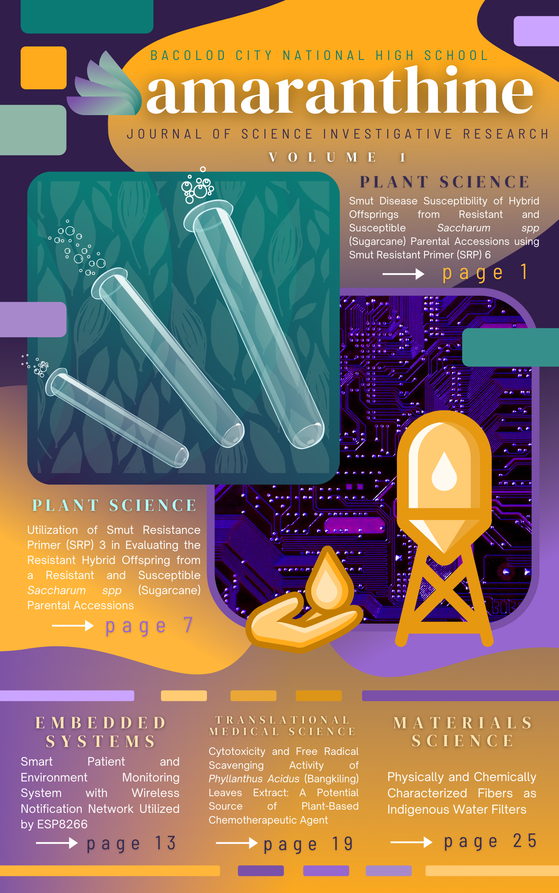

About The Cover
The cover features a myriad of elements designed to embody the journal, including its logo featured beside its name. Set in front of a leaf-textured green background, three test tubes are shown; this overall image symbolizes the three biological science studies in the journal. Behind it, a circuit board in violet represents the study under Embedded Systems with the hand and water tank illustrating the Material Science manuscript geared toward water filtration.
To immortalize the works of science present in these studies, the title bears to live up to its definition. Amaranthine, meaning undying, is derived from the Greek words amarantos and anthos, immortal and flower, respectively. Like the word, the makers of this journal believe that the quest for knowledge and passion for science are things that never truly cease; they only bloom with time.
Yellow, one of the 2021 colors of the year that is known to symbolize the energy in literature, and a violet-green dua-chromatic main scheme represents the colors of the cover. The prominent colors (green and violet) are the two primary colors from the progression of the amaranthine plant: as a symbol of development and growth. As the process of research is, the maturation of amaranthine is identical to the procedures in the duration of a research project. In order for the buds to reach full bloom, a method must take action.
In coherence to City High’s well-known axiom: Soar High, City High, this research journal aims for the same. This collective and collaborative scientific work displays as an epitome of patience and perseverance. As seeds for an immortal flower, everlasting.
Editorial Board
| Editor-in-Chief | JULIANNE MARC M. TAMAYO |
|---|---|
| Editor | JZ LOUISE P. PANTUA |
| Editor | DONNE CALIXTO A. MABUGAT |
| Editor | CHARISSE L. SOMBILLA |
| Illustrator | CHRISTIAN T. DENILA |
| Adviser | PHILLIP RAYMUND R. DE OCA |
Disclaimer
Amaranthine (ISSN: 2799-1458) is the first volume of the annually published journal of Science Investigative Research by the Research Unit of Bacolod City National High School pioneered by the Editorial Board composed of Special Science Class students.
Kindly address all matters regarding the publication to the Journal of Science Investigative Research Editorial Board of Bacolod City National High School, Brgy. Taculing, Bacolod City, Philippines.
The Editor-in-Chief
Amaranthine
Bacolod City National High School
Hernaez St., Taculing, Bacolod City 6100, Philippines
Trunklines
Principal - 4470422
Administration - 4855483
Accounting - 4855480
The authors’ statements and beliefs presented and published in their respective articles do not reflect the statements and beliefs of the Editorial Board, the research unit, the educational institution, and the partner agencies. The authors are responsible for all contents in the article(s), including the accuracy of facts, statements, and citing resources. Their peer researchers, respective advisers, research teachers, defense panels, the Editorial Board, and external reviewers have thoroughly reviewed the articles. Nevertheless, when citing articles found in this journal, take into consideration that high school students mainly performed the studies; caution is hereby advised.
Official website will be launched soon. For the meantime, one may visit the following link for a softcopy of the journal: https://bit.ly/Amaranthine-Volume1
About BCNHS
Standing amidst a bustling city, Bacolod City National High School has evolved through time together with the course of science. Founded in 1948, the school has since then upheld the honor and continuously strives for excellence in the academe.
In the past year, the public high school had over 7000 students in Grades 7-12. In junior high school (JHS), the school has four programs to cater to the future careers of the student body: Basic Education Curriculum (BEC), Special Program for the Arts (SPA), Special Program for Sports (SPS), and the Science, Technology, and Engineering (STE) Curriculum.
In senior high school (SHS), four strands are offered by the institution namely: Science, Technology, Engineering, and Mathematics Track (STEM), Accountancy and Business Management (ABM), Humanities and Social Sciences (HUMSS), and Technical-Vocational Livelihood (TVL).
The Research Unit of the aforementioned school comprises students and faculty in the STE and STEM departments at junior and senior high school levels. The JHS students have entered through an entrance examination in which the program would include those who have ranked in the top 120. They have been in training since their freshman year and are continually evolving in the field of research.
The academic institution consistently produces students equipped with an outstanding education to become well-rounded professionals with the hearts and minds to serve the country.
BCNHS Research Program
The Research Program of Bacolod City National High is a 4-year undertaking that follows a curriculum developed by the Department of Education for Science, Technology, and Engineering Students. As a subject, it is offered to start from Grade 7 where each year, aspects of research knowledge and skills are sequentially taught and put into practice and application until the final year, Grade 10.
Grade 7
Research is introduced in the Grade 7 Level. In this formative year, discussed to learners are concepts on Scientific Attitude, Basic Science Process Skills, Integrated Process Skills, and Scientific Method. They are also guided to demonstrate skills in observation and inference, identify a research problem, design a simple experiment using integrated process skills, and effectively communicate its results in oral and written form. Research I culminates with the conduct of a simple scientific investigation using the scientific method and writing a simple scientific report.
Grade 8
Research in the Grade 8 Level is the introduction to the research process. In this reinforcement year, the nature of research is described from its meaning, characteristics, and importance. Classification of research problems is also highlighted with emphasis on the determination of its sources and appropriate steps in planning and design. The importance of a good literature review is also discussed among learners, including standard use of citation, writing bibliographic format, proper scientific writing, and ethics such as intellectual property and plagiarism. Since proposal writing begins at this level, learners are taught to apply principles of research design, sampling, data collection, analysis, and presentation. They are also prepared for laboratory activities with discussions on procedures, techniques, and proper handling of equipment. Research II ends with the writing of the research proposal.
Grade 9
Research 9 brings learners to the actual conduct of investigation and experimentation. Learners revisit and refine their research proposals incorporating recommendations by experts. They also familiarize parts of the research paper and the IMRAD format. The actual experimentation phase is also done at this level, collection, organization, analysis, and interpretation of data follow. Learners are trained to select appropriate instruments for data collection, organize data in a project notebook, use appropriate statistical tools, test hypotheses, and draw conclusions. Research III concludes with the writing and presentation of the research report.
Grade 10
Research 10 is the culmination of the research curriculum in the STE program. Learners complete the research report with evaluation standards and reviews from consultation with experts. The research report is then finalized and reported to the class. Learners are also encouraged to participate in conferences and research activities organized by the Department of Education and other institutions to share their respective study’s findings in both oral and poster presentations. Completed studies are given the opportunity to be published in this journal, Amaranthine, provided that they comply with the review process.
Reviewers and Panelists
| Name | Distinction |
|---|---|
| Aris C. Larroder, PhD | Research Unit Head, Philippine Science High School - Western Visayas |
| Joji D. Linaugo, PhD | Senior Education Program Specialist, Policy Planning and Research Division Department of Education Division of Bacolod City |
| Jigger P. Leonor, PhD | Research Coordinator, Basic Education and Liceo De La Salle Program University of St. La Salle - Bacolod City |
| Emily D. Sinbengco, MA | Unit Head - Science and Research Units Assumption Iloilo |
Foreword
We acknowledge and recognize the notable initiative of the Science, Technology, and Engineering Department of Bacolod City National High School in producing a School Research Journal. This trailblazing effort is a collaborative enterprise among the Science teachers, researchers, and advanced classes.
This is the first ever in the Department of Education Division of Bacolod City that a public school has come up with a research journal to publish and report the valuable results, findings, and abstracts of students’ researchers. We thank all the competent men and women behind this endeavor. We hope that our Bacolodnon teachers, parents, teachers, leaders, and Education partners will be inspired as they read the contents and look forward to replicating this good practice in their respective milieus.
May God bless all our noteworthy undertakings in schools to produce “Baskug and Kampyon learners” in Bacolod City and beyond. Mabuhay and padayon!
Gladys Amelaine D. Sales, CESO VI - Officer-in-Charge Office of the Schools Division Superintendent
Learning widens our perspectives, exposing ourselves to an abundance of opportunities to inquire, question, and improve various aspects of our society and lives that need research and innovation. As individuals with an undying hunger for development, we need to know what works for us in our context, our eagerness and adaptability to seek and work for this ambition, and the integration of technology and community engagement.
Amaranthine, a fitting name for the first volume of the annually-published Journal of Science Investigative Research of Bacolod City National High School, it immortalizes the great works of young talents that would spark the thirst for knowledge and passion for pursuing science in the minds of their peers; leading and inspiring others to continue the commencing journey, flourishing with time.
It takes a reflective teacher and team of dedicated researchers to effectively respond to the changing tides and context of learning delivery and management towards a quality amid this pandemic. Thus, our gratitude to all who contributed their time, effort, and resources in putting up this research journal. We thank you for your continued support and commitment as you stood and worked with passion, courage, and heroism. Congratulations!
Peter J. Galimba, PhD - Officer-in-Charge Office of the Assistant Schools Division Superintendent
The Science Learning Area of the Curriculum and Implementation Division of Bacolod City takes pride in the publication of Amaranthine, the Journal of Science Investigative Research. It is an ultimate desire of every researcher to publish research findings.
The publication of your research works as high school students is a genuine example of what every researcher must achieve, as it is an important aspect of the responsible conduct of research. This achievement manifests your dedication and willingness to be guided by your mentors in advancing your knowledge of the research process.
May this experience equip you with wisdom and light your passion to continue finding solutions to local and global problems. To the people who created the opportunity for this journal to be born and who made it happen, thank you. May this inspire others to explore science and research. Congratulations!
Edna Rose P. Gueco, MaEd - Education Program Supervisor Science Learning Area
I applaud the noteworthy achievement of the Science, Technology and Engineering Department of BCNHS STE Program for the publication of the 1st Edition of their research journal, Amaranthine.
The journal is an excellent manifestation of collaborative efforts of people who have passion in research putting in issues, concerns and challenges into papers whose findings are worth recommending and publishing. A powerful platform to share knowledge and information that can bring awareness and opportunities helpful in improving various conditions in the society.
This worth-commending piece of work was made possible through the dedication and hard work of the people who put their hearts and minds together in order to publish this journal. I admire the passion and energy of the teachers, students, and supporters making this endeavor a success.
I Look forward to the continued growth and more success of this journal in the future. Congratulations!
Grace M. Abao, PhD - Public Schools District Supervisor District V
It is with delight that we extend our congratulations to the Science, Technology, and Engineering Program and the Science Department of Bacolod City National High School for the launching of the maiden issue of Amaranthine, a journal of Science investigative research.
The publication was traditionally lodged with research institutes and higher education institutions as one way of communicating research results. The bold move of BCNHS to come up with this student-led refereed publication despite the limited resources is highly commendable. The fact that this journal is student-managed makes it stand out as the first in the region among Department of Education schools.
The articles in this volume are testaments of the vast array of applications of Science. It is not easy to get these to fruition from its conception stage, not to mention its publication under a strict refereeing system. Special appreciation goes to the coaches, advisers, outside experts, parents, and other stakeholders who helped us come up with this publication. May this journal issue inspire more to explore the world of Science and publication. Once again, congratulations!
Joji D. Linaugo, PhD - Senior Education Program Specialist Policy, Planning and Research Division
To say that I am happy for your achievement is an understatement. I am undoubtedly proud to have witnessed the conclusion of your dedication and hard work, the publication of Amaranthine, the Journal of Science Investigative Research.
You have turned adversities brought by this pandemic into an opportunity of reaching out to communities to disseminate new knowledge and promote its application. You have scaled new heights and set standards in navigating the research process which conveyed that it doesn’t end in the completion of the paper alone. Instead, it extends further to the public to finally serve its purpose.
The skills and values you have acquired from enduring the rigorous process speak of greater things you could achieve. May this endeavor serve as your added motivation to generate more relevant and beneficial research. Padayon! Kay ang Batang Cityhighnon, Baskug kag Kampyon
Allan M. Pomada - Principal II/Officer-in-Charge Bacolod City National High School
Preface
Bacolod City National High School has produced graduates that have excelled in their own fields of interest and garnered awards in different levels. However, it is common that after competitions and graduations, manuscripts gradually get tossed to the side, buried in the files of a laptop, never to be seen again. This drove the creation of the first-ever journal to be published, making sure that hard works are put into application and contribute to the betterment of society, alongside pursuing the goal of promoting Science and Technology to the minds of the youth.
This journal holds five noteworthy Research studies of students belonging to the Science, Technology, and Engineering Program — who have honed their skills and capabilities since their freshmen year. Of five studies, three are under Biological Science, one works with Embedded Systems, and another tackled Material Science.
Through this journal, we hope to serve as a reminder to anyone who will read this: everything is within our reach as long as we continue to walk. Every effort and initiative we take will always lead us a step closer to our goals and success.
Thus, it is with great pride and delight that we present, Amaranthine.
Dedication
This journal is wholeheartedly dedicated to Aris C. Larroder for fervidly motivating our generation of curious minds to passionately pursue our love for science. Using your knowledge to help better the world is one thing, but shaping young minds is another. Your essential and dedicated service is meaningful to all of us.